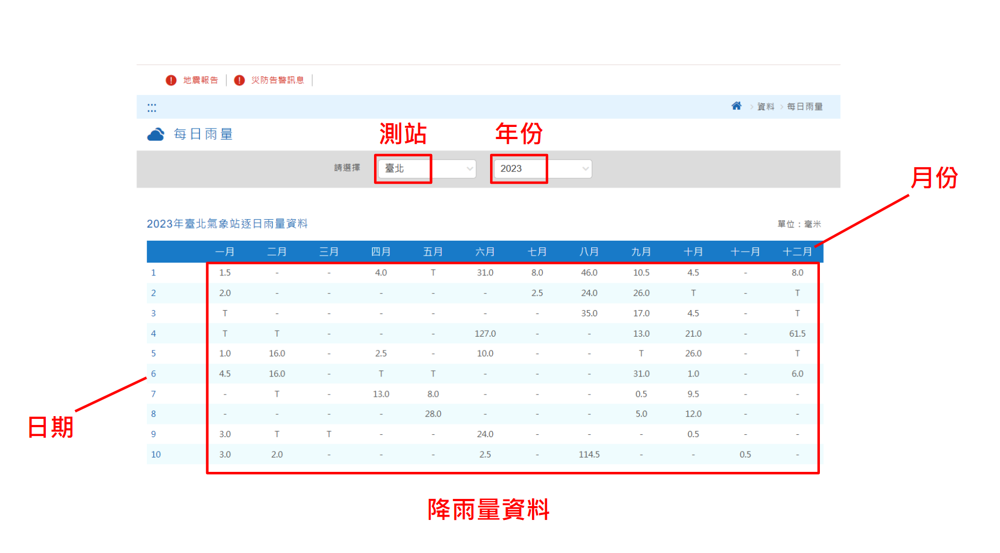

動機
之所以選擇這個主題是因為上學期修水文學所得到的靈感，當時有一份作業是上中央氣象局的每日雨量的網站把資料抓下來，然後利用excel去計算各項指標。雖然當時只需算出一個測站的指標，但由於網頁本身沒有附csv檔，直接複製的話格式又會跑掉，仍花了我不少時間。
如今已經掌握些許爬蟲技術，我想看能否運用爬蟲把資料更有效率的擷取下來，和當初不同的是，這次想挑戰看看能不能將所有測站的資料一口氣爬下來，並運用前半學期教的前端知識，將資料整理後運用Chart.js繪製圖表，呈現在個人網頁上。
目標網站

上圖是中央氣象局的每日雨量資料網頁，我們的目標是爬取測站、年份、月份、日期和降雨量資料
結果呈現
(請先選擇指標與測站)
(若選擇圖表後顯示不出來可以按一下F12)
以上是在期中報告裡設定的目標，目標是計算各氣象站有關降雨的指標，由於時間不夠加上一直卡Bug所以只做了兩種指標，分別是逐年雨量、月平均雨量。
進階分析
根據期中報告的反饋，我們所制定的目標僅止於整理資料，而缺乏數據分析，因此我們選擇了台北地區的降雨資料進行分析，主要是考慮到台北與大家的生活較息息相關。首先計算台北地區的年降雨變率，之後針對2009~2023年的降雨資料做成年降雨量頻率統計圖表，我們將從這些指標來分析台北地區的降雨型態。
2009~2023年臺北年降雨量變率列表
從計算結果來看，臺北地區的降雨變率並不大，皆位於10~20%左右，可以判斷臺北降雨相對穩定，單就氣候而言不容易發生嚴重的洪水及乾旱現象。
2009~2023年臺北年降雨量頻率統計
X軸為降雨量(mm)；Y軸為頻率(次)。可以從這張圖表看出臺北年降雨頻率多集中於1500~3000mm之間，不僅證明了前面所計算的降雨變率的可靠性，也能看出臺北屬於多雨的環境，屬於濕潤氣候區(年降水量>1000mm)。
結論
以氣候學的尺度來看，如此短期的時間尚不足以建構所謂的「氣候」(氣候統計的周期至少為30年)，但各測站所繪製出的圖表大多跟現實情況相符，北部較全年有雨，而南部夏雨冬乾。另外分析結果也能與實際的情況相應，例如從年降雨頻率的分析結果來看，確實符合台北屬於濕潤氣候區的描述。雖然可能含有瑕疵，如在月平均雨量的圖表下，南部的乾季並無顯示數據等，但仍可透過這些圖表看出一定的趨勢。